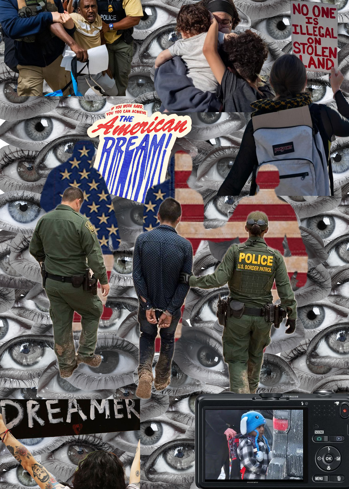
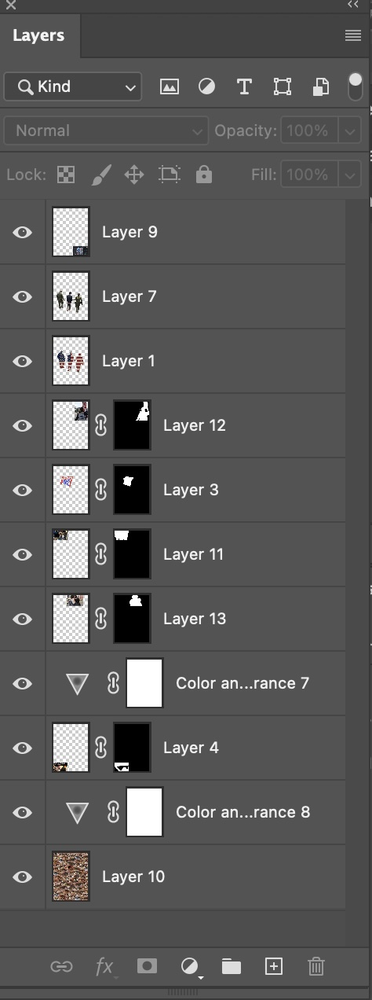

For my photomontage I decided to explore the issue of immigration going on in the United States. We all have seen many families get unfairly separated because of their decision to thrive for a better life for their future. I named my photomontage as “Open Your Eyes” because although this issue is being seen globally some people still don’t see the true cruelty behind these actions. I first hand have seen how immigrants have worked hard, persevered, and conquered.
I used a lot of masking tools for my project. One example where I used this was with the two ICE agents holding the guy and in front of them is the american flag in their silhouette. This was used to portray we should be looked at all as one. Behind all of my images are eyes that fall into the title of “Open Your Eyes”, instead of keeping the vibrant colors I decided to tone them down so it wouldn’t take away from the pictures. Most of my images are found online such as Pinterest.